용접산업기사 (2020-06-06 기출문제)
1과목: 용접야금 및 용접설비제도
1. 용융슬래그의 염기도 식은?
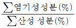
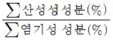
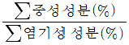
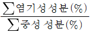
(정답률: 68%)

2. 용접 모재의 탄소 당량에 대한 설명으로 옳은 것은?
- 탄소 당량이 클수록 연성이 증가된다.
- 탄소 당량이 클수록 용접성이 좋아진다.
- 탄소 당량이 클수록 저온균열이 발생하기 쉽다.
- 탄소 당량이 클수록 예열은 불필요하다.
(정답률: 67%)
3. 실용 주철의 특성에 대한 설명으로 틀린 것은?
- 비중은 C와 Si등이 많을수록 감소한다.
- 용융점은 C와 Si등이 많을수록 낮아진다.
- 흑연편이 클수록 자기 감응도가 나빠진다.
- 내식성 주철은 염산, 질산 등의 산에는 강하나 알칼리에는 약하다.
(정답률: 65%)
4. 순철의 조직에 관련된 설명으로 틀린 것은?
- α-철:910℃ 이하에서 BCC구조이다.
- γ-철:910~1390℃에서 FCC구조이다.
- δ-철:1390~1537℃에서 BCC구조이다.
- β-철:1537~1890℃에서 FCP구조이다.
(정답률: 62%)
5. 용접부의 냉각속도가 빨라지는 경우가 아닌 것은?
- 모재가 두꺼울 때
- 예열을 해주었을 때
- 모재의 열전도율이 높을 때
- 맞대기 이음보다 T형 이음일 때
(정답률: 74%)
6. 이종 원자의 합금화에서 모재원자보다 작은 원자가 모재원자의 틈새 또는 결정격자 사이에 들어가는 경우의 고용체는?
- 치환형고용체
- 변태형고용체
- 침입형고용체
- 금속간고용체
(정답률: 82%)
7. 제품이 너무 크거나 노 내에 넣을 수 없는 대형 용접 구조물의 경우에 용접부 주위를 가열하여 잔류 응력을 제거하는 방법은?
- 국부 응력 제거법
- 저온 응력 완화법
- 기계적 응력 완화법
- 노 내 응력 제거법
(정답률: 71%)
8. 다음 중 펄라이트의 구성 조직으로 옳은 것은?
- 페라이트+소르바이트
- 페라이트+시멘타이트
- 시멘타이트+오스테나이트
- 오스테나이트+트루스타이트
(정답률: 76%)
9. 철강재가 200~300℃ 정도에서 상온보다 인장강도와 경도가 증가하지만 연신율이 저하하는 현상은?
- 적열취성
- 청열취성
- 고온취성
- 크리프취성
(정답률: 64%)
10. 예열 및 후열의 목적이 아닌 것은?
- 균열의 방지
- 기계적 성질 향상
- 잔류응력의 경감
- 균열감수성의 증가
(정답률: 72%)
11. 특정 부분의 도형이 작아서 그 부분의 상세한 도시나 치수 기입을 할 수 없을 때는 그 부분을 가는 실선으로 에워싸고, 영문자 대문자로 표시함과 동시에 그 해당 부분을 다른 장소에 확대하여 그리는 것은?
- 국부 투상도
- 부분 확대도
- 보조 투상도
- 부분 투상도
(정답률: 82%)
12. 다음 용접 기로에 대한 설명으로 틀린 것은?(문제 오류로 가답안 발표시 4번으로 발표되었으나 확정답안 발표시 2, 4번이 정답처리 되었습니다. 여기서는 가답안인 4번을 누르면 정답 처리 됩니다.)
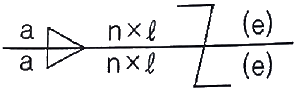
- n은 용접부의 개수를 말한다.
- 목 두께가 a인 연속 필릿 용접이다.
- (e)는 인접한 용접부 간의 거리를 표시한다.
- ℓ은 크레이터부를 포함한 용접부의 길이이다.
(정답률: 73%)
13. 제조 공정의 도중 상태 또는 일련의 공정 전체를 나타낸 제작도로 공작 공정도, 검사도, 설치도가 포함된 제작도는?
- 공정도
- 설명도
- 승인도
- 배근도
(정답률: 77%)
14. KS에서 일반 구조용 압연강재의 종류로 옳은 것은?
- SS410
- SM45C
- SM400A
- STKM
(정답률: 70%)
15. 중심축과 물체의 표면이 나란하게 이루어진 물체, 즉 각 모서리가 직각으로 만나는 물체나 원통형 물체를 전개할 때 사용하는 전개도법으로 가장 적합한 것은?
- 타출을 이용한 전개도법
- 방사선을 이용한 전개도법
- 삼각형을 이용한 전개도법
- 평행선을 이용한 전개도법
(정답률: 75%)
16. 그림과 같이 “넓은 루트면이 있고 이면 용접된 V형 맞대기 용접”의 기호를 바르게 표시한 것은?
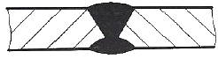
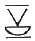
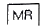
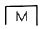
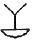
(정답률: 64%)
17. 다음 용접의 명칭과 기호가 틀린 것은?
- 심 용접:
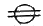
- 이면 용접:
- 겹침 용접:
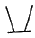
- 가장자리 용접:
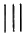
(정답률: 72%)
18. 다음 선의 종류 중 특수한 가공을 하는 부분 등 특별한 요구사항을 적용할 수 있는 범위를 표시하는데 사용하는 선은?
- 굵은 실선
- 굵은 1점 쇄선
- 가는 1점 쇄선
- 가는 2점 쇄선
(정답률: 54%)
19. CAD 시스템의 도입 효과가 아닌 것은?
- 품질향상
- 원가절감
- 납기연장
- 표준화
(정답률: 82%)
20. 치수선으로 사용되는 선의 종류는?
- 은선
- 가는 실선
- 굵은 실선
- 가는 1점 쇄선
(정답률: 75%)
2과목: 용접구조설계
21. 두께가 5mm인 강판을 가지고 다음 그림과 같이 완전 용입의 맞대기 용접을 하려고 한다. 이 때 최대 인장하중을 50000M 작용시키려면 용접 길이는 얼마인가? (단, 용접부의 허용 인장응력은 100MPa이다.)
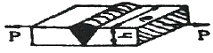
- 50mm
- 100mm
- 150mm
- 200mm
(정답률: 72%)
22. 용접성을 저하시키며 적열 취성을 일으키는 원소는?
- 황
- 규소
- 구리
- 망간
(정답률: 81%)
23. 다음 용착법 중 용접방향과 용착방향이 동일하게 되도록 용착하는 방법은?
- 전진법
- 후퇴법
- 양분법
- 빔 진동법
(정답률: 74%)
24. 용접 구조 설계상의 주의 사항으로 틀린 것은?
- 용접에 의한 변형 및 잔류응력을 경감시킬 수 있도록 한다.
- 용접 치수는 강도상 필요한 치수 이상으로 크게 하지 않는다.
- 용접 부위는 단면 형상의 급격한 변화 및 노치가 있는 부위로 한다.
- 용접 이음을 감소시키기 위하여 압연 형재, 주단조품, 파이프 등을 적절히 이용한다.
(정답률: 82%)
25. 일반적인 용접 이음 설계시 주의 사항으로 틀린 것은?
- 가능하면 용접선은 교차하지 않도록 설계한다.
- 될 수 있는 한 용접량이 많은 흠 형상을 설계한다.
- 용접 작업에 지장을 주지 않도록 충분한 공간을 갖도록 설계한다.
- 맞대기 용접에는 이면용접을 할 수 있도록해서 용입 부족이 없도록 한다.
(정답률: 83%)
26. 다음 금속 중 냉각속도가 가장 빠른 것은?
- 구리
- 연강
- 알루미늄
- 스테인리스강
(정답률: 69%)
27. 인장강도가 530M/mm2인 모재를 용접하여 만든 용접시험편인 인장강도가 380N/mm2일 때 이 용접부의 이음효율은 약 몇 %인가?
- 52
- 72
- 94
- 140
(정답률: 70%)
28. 최초길이가 15mm인 시험편을 인장시험 후 20mm가 되었을 경우 연신률은 약 몇 %인가?
- 13
- 23
- 33
- 53
(정답률: 65%)
29. 용접구조물을 제작할 때 피로강도를 향상시키기 위한 방법을 올바르게 설명한 것은?
- 표면가공, 다듬질 등에 의하여 단면이 급변하게 할 것
- 가능한 응력 집중부에는 용접부가 집중되도록 할 것
- 냉간 가공 또는 야금적 변태를 이용하여 기계적 강도를 줄일 것
- 열처리 또는 기계적인 방법으로 용접부 잔류응력을 완화시킬 것
(정답률: 72%)
30. 피복아크용접에서 판두께 8mm 이상의 두꺼운 강판을 용접할 때 사용되는 이음 흠의 형상으로 가장 거리가 먼 것은?
- I형
- H형
- U형
- 양면J형
(정답률: 66%)
31. 용접부 검사의 분류 중 기계적 시험법이 아닌 것은?
- 인정 시험
- 굽힘 시험
- 피로 시험
- 현미경 조직 시험
(정답률: 77%)
32. 강에 황이 층상으로 존재하는 유황 밴드가 심한 모재를 서브머지드 아크용접 할 때 나타나는 고온 균열은?
- 토 균열
- 설퍼 균열
- 비드 밑 균열
- 크레이터 균열
(정답률: 55%)
33. 탄소함유량이 약 0.25%인 탄소강을 용접할 때 가장 적당한 예열온도는 약 몇 ℃인가?
- 90~150
- 250~350
- 400~450
- 470~550
(정답률: 46%)
34. 가용접시 주의해야 할 사항으로 틀린 것은?
- 본용접과 같은 온도에서 예열한다.
- 개선 흠 내의 가용접부는 백치핑으로 완전히 제거한다.
- 가용접 위치는 부품의 끝 모서리나 중요한 부위에 실시한다.
- 본용접자와 동등한 기량을 갖는 작업자가 가용접을 실시한다.
(정답률: 67%)
35. 플러그 용접의 전단강도는 구멍의 면적당 전용착 금속 인장강도의 몇 %정도인가?
- 20~30
- 40~50
- 60~70
- 80~90
(정답률: 51%)
36. 다음 그림과 같은 홈의 종류는 무슨 형인가?
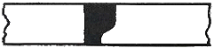
- U형
- V형
- I형
- J형
(정답률: 81%)
37. 초음파 탐상법의 종류가 아닌 것은?
- 투과법
- 공진법
- 펄스반사법
- 플라스마법
(정답률: 68%)
38. 용립변형의 종류에 해당되지 않는 것은?
- 좌굴변형
- 연성변형
- 회전변형
- 비틀림변형
(정답률: 50%)
39. 용접부를 연속적으로 타격하여 쵸면층에 소성변형을 주어 잔류 응력을 감소시키는 방법은?
- 피닝법
- 변형 교정법
- 저온 응력 완화법
- 응력 제거 어닐링
(정답률: 82%)
40. 일반적인 각변형 방지 대책으로 틀린 것은?
- 구속지그를 활용한다.
- 역변형의 시공법을 사용한다.
- 용접속도가 느린 용접법을 이용한다.
- 개선각도는 작업에 지장이 없는 한도내에서 작게 하는 것이 좋다.
(정답률: 72%)
3과목: 용접일반 및 안전관리
41. 레이저 용접의 설명으로 틀린 것은?
- 접촉식 용접방법이다.
- 모재의 열변형이 거의 없다.
- 이종금속의 용접이 가능하다.
- 미세하고 정밀한 용접을 할 수 있다.
(정답률: 73%)
42. 전격방지기가 설치된 용접기의 가장 적당한 무부하 전압은 몇 V정도인가?
- 20~30
- 40~50
- 60~70
- 80~90
(정답률: 62%)
43. 저항 용접의 특징으로 틀린 것은?
- 접합강도가 비교적 크다.
- 산화 및 변질 부분이 적다.
- 용접봉, 용제 등이 불필요하다.
- 작업속도가 느려 소량생산에 적합하다.
(정답률: 70%)
44. 고장력강용 피복 아크 용접봉에서 피복제 게통이 철분 저수소계인 것은?
- E5001
- E5003
- E5316
- E5326
(정답률: 50%)
45. 역류, 역화, 인화 등을 막기 위해 사용하는 수봉식 안전기 취급시 주의사항이 아닌 것은?
- 수봉관에 규정된 선까지 물을 채운다.
- 안전기가 얼었을 경우 가스토치로 해빙시킨다.
- 한 개의 안전기에는 반드시 한 개의 토치를 설치한다.
- 수봉관의 수위는 작업 전에 반드시 점검한다.
(정답률: 86%)
46. 정격 사용률이 50%이고, 정격 2차 전류가 300A인 아크 용접기를 사용하여 실제 300A로 용접한다면 용접기의 허용 사용률은 몇 %인가?
- 34.7
- 41.7
- 50
- 72
(정답률: 63%)
47. 직류 아크 용접기의 극성에 따른 특징으로 옳은 것은?
- 역극성의 경우 비드폭이 좁다.
- 정극성의 경우 모재의 용입이 깊다.
- 역극성의 경우 용접봉의 녹음이 느리다.
- 정극성은 박판용접 및 비철금속 용접에 쓰인다.
(정답률: 68%)
48. 일반적인 프로젝션 용접의 특징으로 옳은 것은?
- 전극의 수명이 짧다.
- 용접 속도가 느리다.
- 제품의 신뢰도가 낮다.
- 작업능률이 높으며 외관이 아름답다.
(정답률: 79%)
49. 1차 입력이 40kVA인 피복아크 용접기에서 전원 전압이 200V라면 퓨즈의 용량은 몇 A가 가장 적합한가?
- 100
- 150
- 200
- 250
(정답률: 63%)
50. 서브머지드 아크 용접의 특징으로 틀린 것은?
- 유해광선 발생이 적다.
- 용착속도가 빠르며 용입이 깊다.
- 전류밀도가 낮아 박판용접에 용이하다.
- 개선각을 작게 하여 용접의 패스 수를 줄일 수 있다.
(정답률: 65%)
51. MIG용접의 특징으로 옳은 것은?
- 수하특성 및 절전류 특성을 가진다.
- MIG 용접은 전자동 용접에만 사용한다.
- 전류 밀도가 피복아크용접의 약 6배 정도 높다.
- TIG 용접에 비해 능률이 작아 3mm 이하의 박판용접에 주로 사용한다.
(정답률: 52%)
52. 가스용접에서 토치의 취급상 주의사항으로 틀린 것은?
- 토치를 망치 등 다른 용도로 사용해서는 안된다.
- 팁 및 토치를 작업장 바닥이나 흙 속에 방치하지 않는다.
- 작업 중 발생하기 쉬운 역류, 역화, 인화에 항상 주의하여야 한다.
- 팁을 바꿔 끼울 때에는 반드시 양쪽 밸브를 모두 열고 팁을 교체한다.
(정답률: 86%)
53. 가스 절단에 사용되는 프로판 가스의 성질을 설명한 것 중 틀린 것은?
- 공기보다 가볍다.
- 증발잠열이 크다.
- 상온에서는 기체 상태이고 무색이다.
- 액화하기 쉽고 용기에 넣어 수송하기 편리하다.
(정답률: 60%)
54. 가스절단에서 일정한 속도로 절단할 때 절단 홈의 밑으로 갈수록 슬래그의 방해, 산소의 오염 등에 의해 절단이 느려져 절단면을 보면 거의 일정한 간격으로 평행한 곡선이 나타난다. 이 곡선을 무엇이라 하는가?
- 가스궤적
- 드래그 라인
- 절단면의 아크 방향
- 절단속도의 불일치에 따른 궤적
(정답률: 82%)
55. 가스 절단 시 사용되는 산소 중에 불순물이 증가되면 나타나는 결과로 틀린 것은?
- 절단면이 거칠어진다.
- 절단 속도가 빨라진다.
- 산소의 소비량이 많아진다.
- 슬래그의 이탈성이 나빠진다.
(정답률: 74%)
56. 피복아크용접봉의 피복 배합제 중 탈산제로 사용되는 것은?
- 붕사
- 망간철
- 석회석
- 산화티탄
(정답률: 39%)
57. 연납 땜과 경납 땜을 구분하는 기준 온도는 몇 ℃인가?
- 120
- 300
- 350
- 450
(정답률: 57%)
58. 교류아크용접기의 부속장치 중 아크 발생 초기만 용접 전류를 특별히 높이는 장치는?
- 핫 스타트 장치
- 원격 제어 장치
- 전격 방지 장치
- 초음파 발생 장치
(정답률: 85%)
59. 교류 아크 용접기에서 용접전류 조정범위는 정격 2차 전류의 몇 %정도인가?
- 20~110%
- 40~170%
- 60~190%
- 80~210%
(정답률: 61%)
60. 중압식 가스용접 토치에서 사용되는 아세틸가스의 압력으로 적당한 것은?
- 0.25MPa 이상
- 0.13~0.25MPa
- 0.007~0.13MPa
- 0.001~0.007MPa
(정답률: 53%)